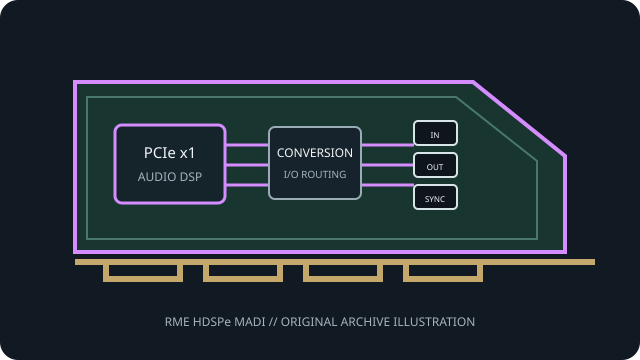

[ PROFESSIONAL AUDIO // PCIe ADD-IN ]
RME HDSPe MADI
A single-link MADI recording and routing card with coaxial or optical connectivity and a separate stereo monitor output.

MODEL SCOPE: RME HDSPe MADI. Single-link MADI PCIe interface with 64/32/16-channel modes at 48/96/192 kHz, word clock and MIDI breakout. Confirm PCB/IS revision, accessories, slot wiring and current vendor driver before installation.
Model-specific specifications
| Model-specific SKU | RME HDSPe MADI |
|---|---|
| Host interface / lanes | PCI Express x1; RME identifies the HDSPe as a one-lane PCIe endpoint. |
| Codec / conversion | MADI and AES-connected equipment remain digital; the card provides a built-in 24-bit stereo monitor/headphone D/A path. Converter IC model is not stated in the cited RME page. |
| Analog I/O | One stereo analog line/headphone monitor output (24-bit/96 kHz); no analog capture inputs. |
| Digital I/O / protocols | One MADI input and output selectable over optical SC or 75-ohm coaxial BNC; expansion breakout adds word-clock I/O and two independent MIDI I/O pairs. |
| Resolution / sample rates | MADI carries 64 channels per direction at 44.1/48 kHz, 32 at 96 kHz and 16 at 192 kHz; supports 56/64-channel and single-/double-wire modes. |
| Latency / monitoring | RME documents low-latency HDSPe operation and hardware TotalMix monitoring; round-trip latency depends on driver buffer and system configuration, with no single fixed value on the cited product page. |
| Driver / OS compatibility | RME HDSPe driver and TotalMix. The product documentation lists legacy Windows and Intel Mac OS X driver families; verify current driver-kit support before deployment. |
Compatibility & preservation
Use the correct optical or 75-ohm coax cable and coordinate MADI frame rate, clock source and 56/64-channel mode. RME states the board can be combined with other HDSPe MADI cards subject to host resources.
- Photograph the card label, PCB revision, rear connectors and included breakout cables before service.
- Retain the exact working driver, firmware, operating-system version, clock and routing configuration.
- Confirm lane wiring, bracket clearance, channel map and external converter/network compatibility; connector fit alone is not a compatibility guarantee.
Manufacturer sources
- RME HDSPe MADI — manufacturer specificationsManufacturer documentation for this model, driver family or revision.
- RME HDSPe driver-kit compatibility informationManufacturer documentation for this model, driver family or revision.